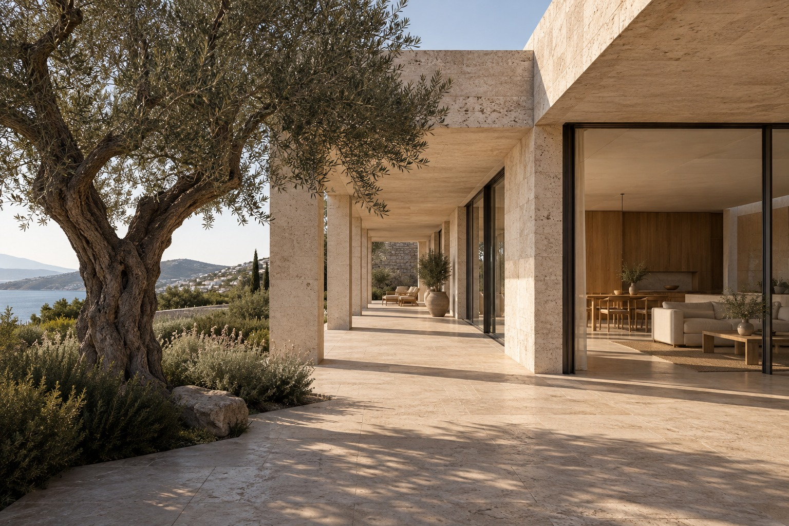
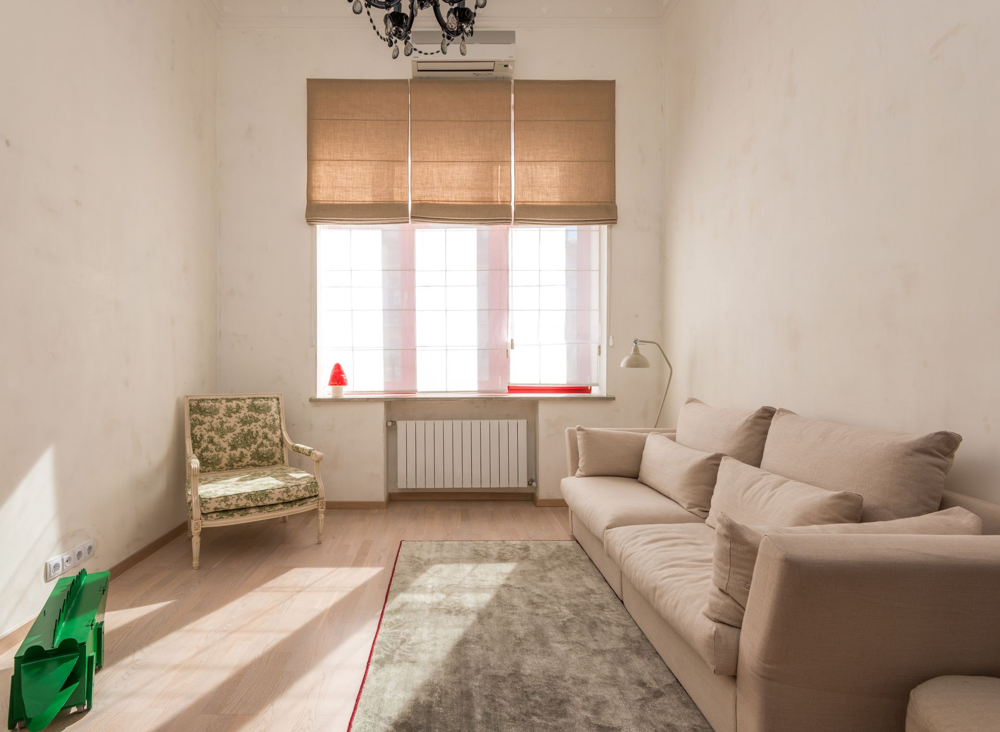
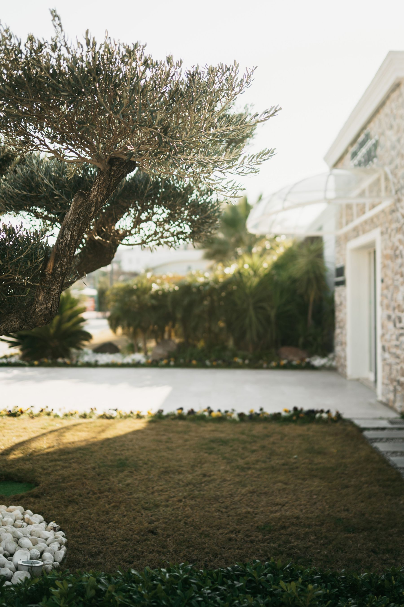

Projeyi incele ↗PORTFOLYO — 2024 / 2026
Her yerin
kendi hikâyesi.
Konut, iç mekân ve çalışma alanlarından bir seçki.
04 PROJE
Projeyi incele ↗
Projeyi incele ↗ Projeyi incele ↗
Projeyi incele ↗PORTFOLYO — 2024 / 2026
Konut, iç mekân ve çalışma alanlarından bir seçki.
04 PROJE
Projeyi incele ↗
Projeyi incele ↗
Projeyi incele ↗Projeyi incele ↗BİR SONRAKİ MEKÂN
İstanbul, Türkiyeİyi bir proje, doğru sorularla başlar.
Proje Görüşmesi ↗